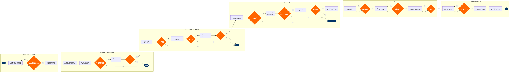

| Step | L4 Step Name | KPI / Target | Pain Point / Risk | Gate |
|---|---|---|---|---|
| 1.1 | Analyse crew headcount gap vs. demand forecast | Forecast accuracy ±5% vs. actual recruits needed; report delivered ≥10 months ahead of class date | Demand forecast volatility from new route announcements and aircraft delivery slippage causes mid-cycle requisition revisions; 9–12-month type-rating lead times mean over/under-hiring is costly and hard to correct | ⚠ |
| 1.2 | Submit and approve crew recruitment requisition | Requisition-to-posting cycle ≤3 business days; budget approval SLA ≤5 business days | SAP SuccessFactors integration with Jeppesen Crew Management is manual; class date misalignment between HR and Training wastes simulator slots costing $5,000–$12,000 per unused FFS hour | ⚠ |
| 2.1 | Publish vacancy and build candidate pipeline | Application-to-qualified-applicant ratio ≥15%; time-to-slate ≤21 days from posting | FAR 121.436 ATP minimum (1,500 hours) creates a shallow qualified candidate pool; competition from cargo carriers and regional airlines for experienced pilots drives signing bonus inflation, increasing cost-per-hire beyond budget assumptions | |
| 2.2 | Screen applications against FAR 121 ATP minimums | Screen pass rate ≥40% of qualified applicants; false-negative rate <5% on manual reviews | Manual logbook hour verification is time-consuming and fraud-prone; inflated or falsified total-time entries are an industry-wide risk requiring cross-check against FAA Airmen Inquiry — no automated integration exists between ATS and FAA records | ⚠ |
| 2.3 | Conduct HR pre-screen video interview | Pre-screen to assessment conversion rate ≥65%; no-show rate <10% | Scheduling across time zones for international candidates and active-duty military applicants creates coordination overhead; no-show rates of 10–15% without automated two-way reminder workflows in SuccessFactors deplete pipeline faster than sourcing can replenish | ⚠ |
| 3.1 | Administer aptitude and psychometric assessment | Assessment completion rate ≥90%; pass threshold ≥65th percentile on cognitive battery | Hogan and Criteria Corp are not natively integrated with SAP SuccessFactors; scores must be manually uploaded, creating data-entry lag and gaps in the EEOC audit trail required for FAR Part 121 carrier compliance | ⚠ |
| 3.2 | Conduct simulator technical assessment — FFS Level D | First-attempt pass rate ≥75%; FFS simulator utilisation for recruiting ≥80% of booked slots | FFS Level D availability is a shared constraint between line training, recurrent training, and recruiting — unplanned FFS maintenance causes candidate rescheduling and downstream class-date delays; recruiting slots are lowest priority in most carriers' FFS allocation policies | ⚠ |
| 3.3 | Conduct structured panel interview and make hire decision | Offer acceptance rate ≥85%; panel-to-verbal-offer cycle ≤5 business days | Panel scoring without a Behaviourally Anchored Rating Scale (BARS) leads to inconsistent decisions and EEO exposure; calibration sessions between Chief Pilots and HR are ad hoc, creating inter-rater reliability risk that is difficult to defend in EEOC investigations | ⚠ |
| 4.1 | Initiate PRIA check and criminal background screening | PRIA response turnaround ≤30 days (FAR 121.432 statutory deadline); background check completion ≤10 days; disqualification rate <8% | FAR 121.432 PRIA requires contacting all prior aviation employers within 5 years — defunct carriers, foreign operators, and unresponsive employers can delay responses by 4–8 weeks with no regulatory enforcement mechanism, directly pushing class dates and increasing training pipeline gaps | ⚠ |
| 4.2 | Schedule and complete FAA Class 1 AME medical exam | First-class medical pass rate ≥88%; average AME scheduling lead time ≤10 days; medical disqualification identified pre-class ≥95% of cases | Candidates with undisclosed conditions (ADHD, cardiovascular history) or special issuance requirements fail at this late stage, creating class fill gaps with no time to backfill; BasicMed provisions do not apply to FAR Part 121 ATP-required operations, so no alternative pathway exists | ⚠ |
| 4.3 | Verify right-to-work and obtain TSA security clearance | E-Verify clearance ≤3 business days; TSA STA clearance ≤21 days; I-9 compliance rate 100% | TSA STA delays for candidates with extensive foreign travel history or partial name matches on government watchlists can hold class starts by 2–4 weeks; airline bears DOT liability if any revenue flying occurs before STA clears, requiring costly reallocation of training resources | ⚠ |
| 4.4 | Issue employment contract and confirm class date | Contract signature to class start ≥14 days buffer; offer-to-class-start cycle ≤90 days; DocuSign completion rate 100% within 3 days of issue | Contract terms covering domicile preference, upgrade timelines, and training bond obligations are a primary retention lever — verbal recruiter commitments that diverge from standardised contract language drive year-1 attrition; no single system of record exists to track promises made during recruitment | |
| 5.1 | Complete airline indoctrination and systems ground school | Ground school exam first-attempt pass rate ≥90%; dropout or withdrawal rate <5% per class | CBT content revision cycles lag behind avionics Service Bulletin (SB) and procedure changes by 6–12 months; new hires learn superseded procedures during ground school and require re-briefing before IOE, increasing Check Airman workload and extending qualification timelines | ⚠ |
| 5.2 | Conduct type rating simulator training under AQP | FFS training syllabus completion rate 100%; average event grade ≥Satisfactory on all AQP manoeuvres; FFS utilisation ≥85% | AQP data management is manual at many carriers — FFS event grades recorded on paper and scanned into training records, creating audit trail gaps for FAA AAIP oversight; LOSA data capture is not standardised, reducing safety data quality for SMS programmes | ⚠ |
| 5.3 | Administer FAA checkride and issue type rating | First-attempt checkride pass rate ≥85%; temporary certificate issuance ≤2 days post-exam; permanent certificate ≤120 days per FAA Registry SLA | FAA DPE availability is a systemic bottleneck — nationwide DPE shortage means checkride wait times of 2–4 weeks, delaying class graduation and IOE start; airline AAIP (Airline Aviation Training Programme) designation mitigates this but requires dedicated Check Airman capacity that competes with line operations | ⚠ |
| 6.1 | Complete Initial Operating Experience (IOE) line check | IOE completion within 90 days of type rating issuance (FAR 121.434); first-attempt line check pass rate ≥90%; IOE hours per graduate ≤25 hours | IOE pairing availability depends on route and equipment schedule — Jeppesen pairing optimiser does not natively prioritise IOE pairings, causing delays beyond the 90-day FAR 121.434 regulatory window; FAR Part 117 fatigue rules for Check Airmen further constrain IOE scheduling during high operational tempo periods | ⚠ |
| 6.2 | Activate crew qualification record and assign domicile | System activation within 24 hours of IOE sign-off; crew record data accuracy 100%; payroll activation lag ≤1 business day | Data synchronisation between Jeppesen crew qualification records and SAP SuccessFactors payroll is manual at most carriers — activation delays cause pay errors and crew portal access failures on day 1 of line flying, generating HR ticket volume and eroding new hire confidence | |
| 6.3 | Assign to initial PBS bid period and complete onboarding | Time from IOE completion to first revenue pairing ≤5 days; onboarding task completion rate 100% by day 30; year-1 voluntary attrition ≤8% | New hires unfamiliar with Preferential Bidding System (PBS) mechanics consistently place suboptimal first bids, resulting in undesirable schedules and early attrition complaints; targeted PBS orientation reduces this but is rarely standardised in onboarding programmes, and Jeppesen CrewPlan offers no new-hire guided bidding mode |